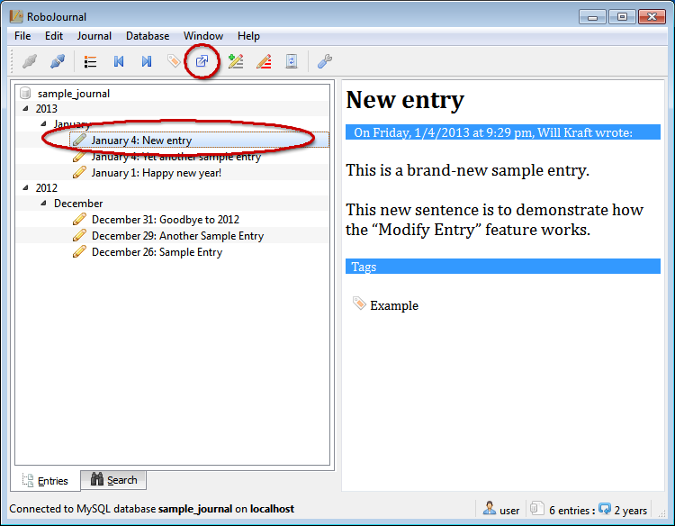
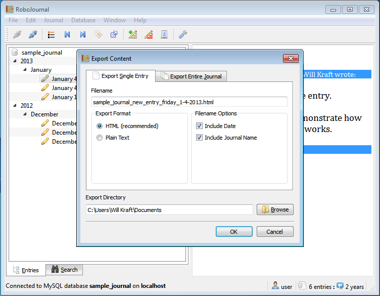
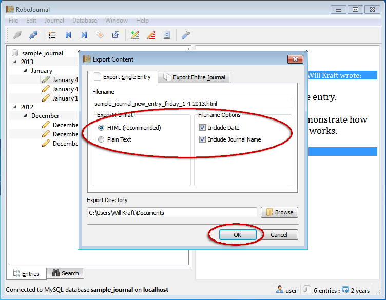
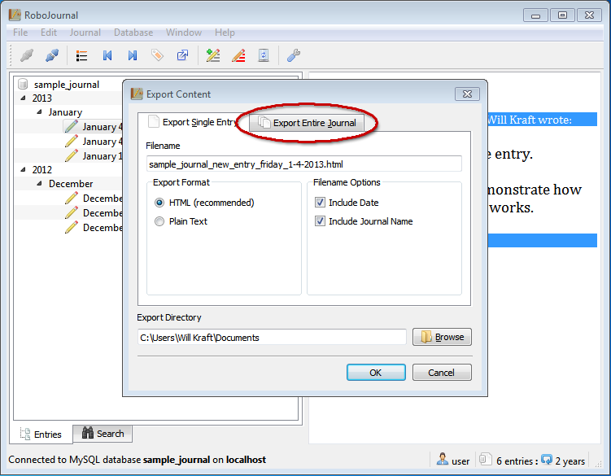
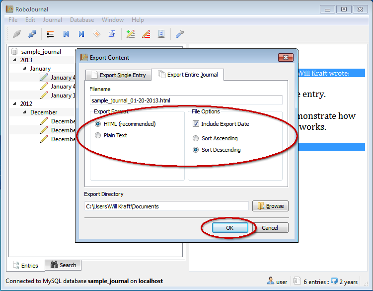

Exporting Journal Entries
Sections
Overview
RoboJournal stores all journals as databases. Databases like MySQL are not discrete files on your hard drive that you directly access; rather they are more abstract entities you work with through an intermediary program like RoboJournal. The intermediary program relays data between the client (your computer) and the actual journal database residing on the host. While the journal appears to be on your computer, this is not really the case unless you are running the database server on localhost.
Since the journal databases are abstract entities, it is normally difficult to extract data from them unless you dump the entire database to disk as a file (the most common backup method). Fortunately, RoboJournal provides a way to directly extract journal content (in part or in whole) from its database in a form that may be easily backed up or copied.
Export Formats
RoboJournal currently supports two export formats for your entry data. Both formats are universally-compatible with every operating system and many handheld devices as well.
HTML Export
HTML formatting causes the exported section(s) to be saved as HTML files that may be displayed in any web browser. Since RoboJournal already stores entries in HTML format, this option preserves all existing formatting. Therefore, it is the recommended format for both individual entries and full journal exports. The appearance and function of HTML output documents are controlled through current settings found in the RoboJournal Preferences.
Plain Text Export
Plain text export causes the exported section(s) to be formatted as plain text files meant to be read with a text editor like Vim or Notepad. RoboJournal automatically formats the text file for the operating system it is currently running on (such as using the proper linebreak character).
Export Options and Settings
The Export Content window interface consists of two tabs that are very similar to each other yet work very differently. The Export Single Entry tab contains options applicable to individual entries while the options on the Export Entire Journal tab affect the entire journal. The following tables list and describe the options found on the Export Content window based on the tab on which they are found.
The Export Location field displays the folder where all exported entries are to be placed. This field is always visible no matter which tab is selected.
Export Single Entry Tab
| Filename | The Filename field contains the name to be applied to the entry you have selected for export. The length and complexity of the filename are determined by the options you currently have selected. The base filename is determined by the title of the entry to be exported. RoboJournal automatically strips out all characters (like colons or forward/backward slashes) that would produce an illegal filename on Windows or Unix if such characters are found in the entry title. |
| Export Format | The options in this group determine what type of file is produced by the export process. Clicking the HTML (recommended) button causes RoboJournal to export the entry as a web document while the Plain Text option produces a plain text file. |
| Include Date | If checked, this option appends the entry date (plus the day of the week on which it was written) to the filename (i.e. sample_journal_new_entry_friday_1-4-2013.html). |
| Include Journal Name | If checked, this option includes the journal name in the filename (i.e. sample_journal_new_entry_friday_1-4-2013.html). This option is recommended because it makes it easier to remember which journal an entry came from. |
Export Entire Journal Tab
| Filename | The Filename field contains the name to be applied to the entry you have selected for export. The length and complexity of the filename are determined by the options you currently have selected. RoboJournal uses the name of the journal as the base filename. RoboJournal automatically strips out all characters (like colons or forward/backward slashes) that would produce an illegal filename on Windows or Unix if such characters are found in the entry title. |
| Export Format | The options in this group determine what type of file is produced by the export process. Clicking the HTML (recommended) button causes RoboJournal to export the journal as a web document while the Plain Text option produces a plain text file. |
| Include Export Date | If checked, this option causes RoboJournal to append the current date to the filename (i.e. sample_journal_01-20-2013.html). This option is ideal for archival purposes because it allows you to see the journal as it was at a specific point in time. This option also allows you to export the journal multiple times without having to replace older versions. |
| Sort Ascending/Sort Descending | This option controls the order in which entries are placed in the exported document. Selecting the Sort Ascending option causes the newest entry to be placed first while Sort Descending does the opposite. |
Exporting a Single Entry
Like the Manage Tags window, RoboJournal's export system is designed to target a specific entry (even when you use it to export an entire journal at once). The following procedure instructs you how to target a specific entry and bring up the Export Content window:
- Click to select the desired entry in the Chronological Entry List (the selected entry is shown within the large oval in Figure 1).Figure 1: Select an entry and click the Export Content toolbar button to display the Export Content dialog.
- Click the Export Content toolbar button (indicated by the small circle in Figure 1).
- The Export Content window is displayed:Figure 2: The Export Content window is always superimposed over the main window.
- Ensure that all Export Format and Filename Options settings (indicated by the red oval in Figure 3) are configured appropriately and change them if necessary.Figure 3: The options indicated by the red circle have a direct impact on the predetermined Filename.
- Click the OK button to continue (a confirmation message is displayed if the export operation is successful).
Exporting the Entire Journal
As previously stated, RoboJournal allows you to export an entire journal at once. This is much faster and produces better results than the only other alternative method (manually exporting the journal one entry at a time) because it loops through the entire journal and appends each entry to a single file.
The procedure for exporting the entire journal is very much the same as exporting a single entry:
- Click to select an entry (indicated by the oval in Figure 4) from the Chronological Entry List. Unlike in the previous procedure, it does not matter which entry you choose since you intend to export the entire journal.Figure 4: You may select any entry if you intend to export the entire journal.
- Click the Export Content toolbar button (indicated by the small circle in Figure 4). The Export Content window is displayed.
- Click the Export Entire Journal tab (indicated by the oval in Figure 5) to switch to it.Figure 5: The procedure for exporting the entire journal is very similar to that of exporting a single entry until you get to this point.
- Check the circled options in Figure 6 to ensure they are set properly. Change them if necessary.Figure 7: At first glance, these options look similar to those in Figure 3 but these affect the entire journal rather than a single entry.
- Click the OK button to continue. A confirmation message is displayed if the export operation is successful.
Copyright © 2013 by Will Kraft. All parts of the RoboJournal Documentation are covered by the terms of the GNU Free Documentation License.